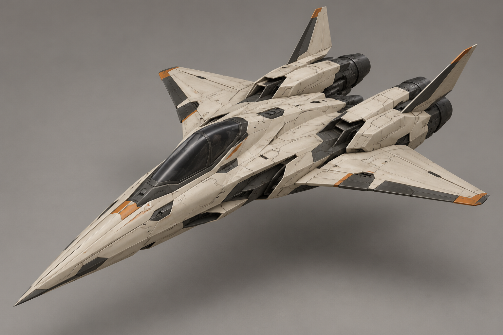
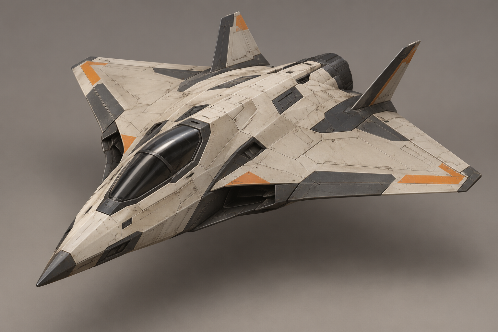
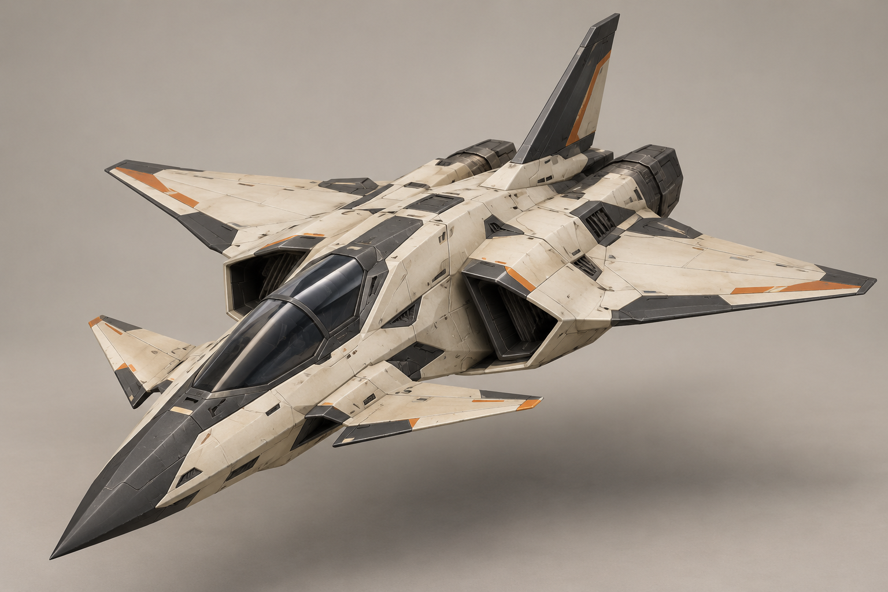
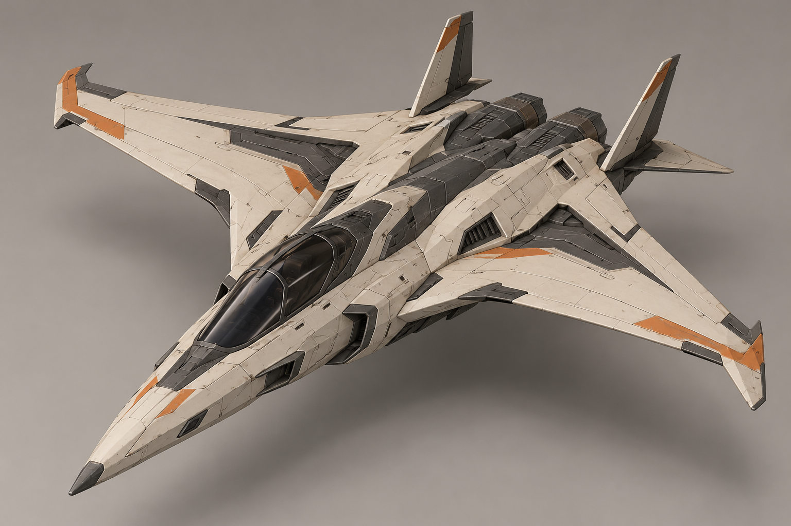
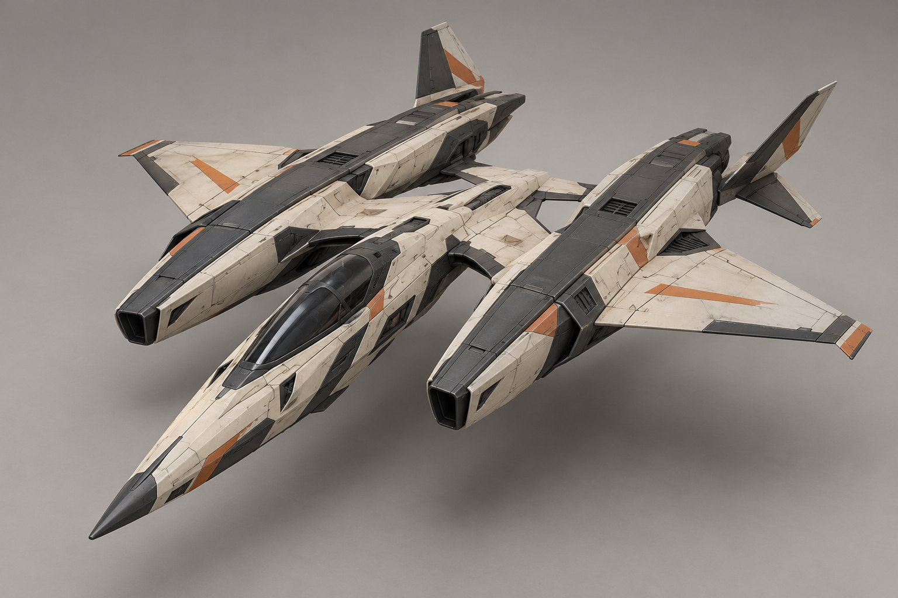
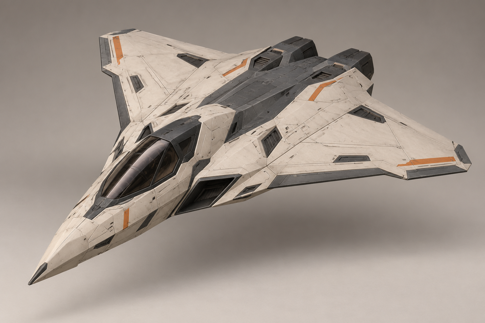
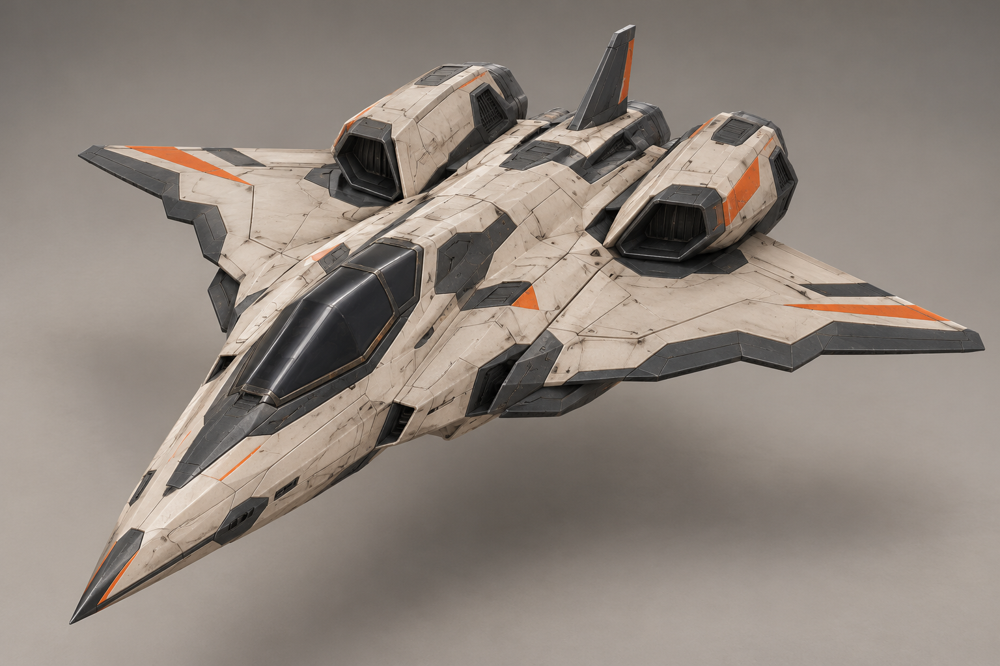
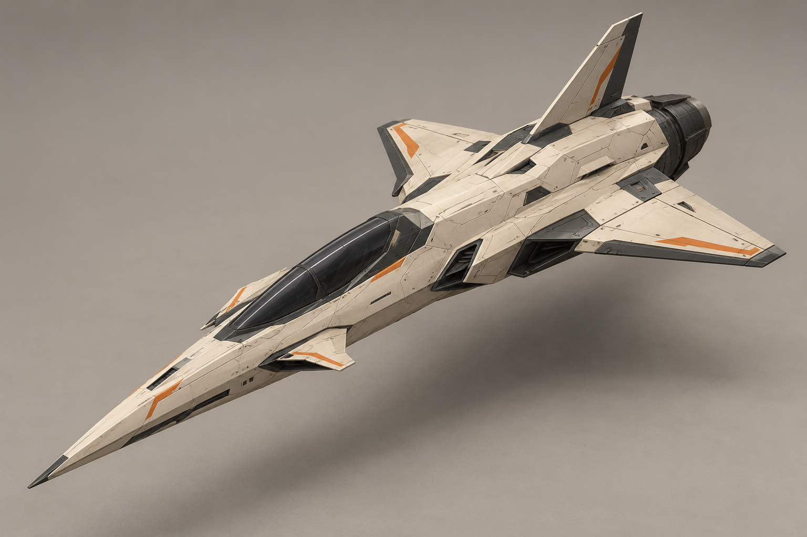

A «Игла»
Узкий длинный нос, стреловидное крыло и два разнесённых двигателя.

Промпт
B «Дельта»
Широкое треугольное крыло и короткий утопленный корпус.

Промпт
C «Канард»
Передние канарды, узкая талия и гранёные боковые воздухозаборники.

Промпт
D «Серп»
Обратная стреловидность и компактные задние двигатели.

Промпт
E «Вилка»
Две продольные балки с двигателями и центральная кабина.

Промпт
F «Ромб»
Ромбовидный план крыла и гладкий низкий профиль.

Промпт
G «Ступень»
Короткое ступенчатое крыло и высокие задние гондолы.

Промпт
H «Стрела»
Длинный центральный корпус, малая площадь крыла и один крупный двигатель.

Промпт